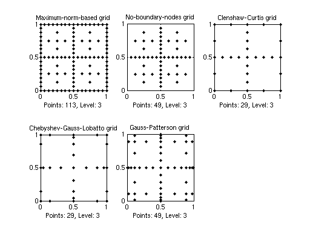

cmpgrids
Compare the available sparse grid types.Syntax
cmpgridscmpgrids(N)cmpgrids(N,D)
Description
cmpgrids Compares the maximum-norm-based grid, the no-boundary-nodes grid, the Clenshaw-Curtis grid, the Chebyshev-Gauss-Lobatto grid, and the Gauss-Patterson grid in dimension D = 2 and level N = 3.
cmpgrids(N) Compares the grids for level N.
cmpgrids(N,D) Compares the grids in dimension D. Permitted are only the values D = 2 or D = 3.
Examples
The following statement plots the four available sparse grids with level N = 3 in two dimensions, producing the following graph.
cmpgrids(3,2);
See Also
plotgrid,
plotindices,
spgrid.